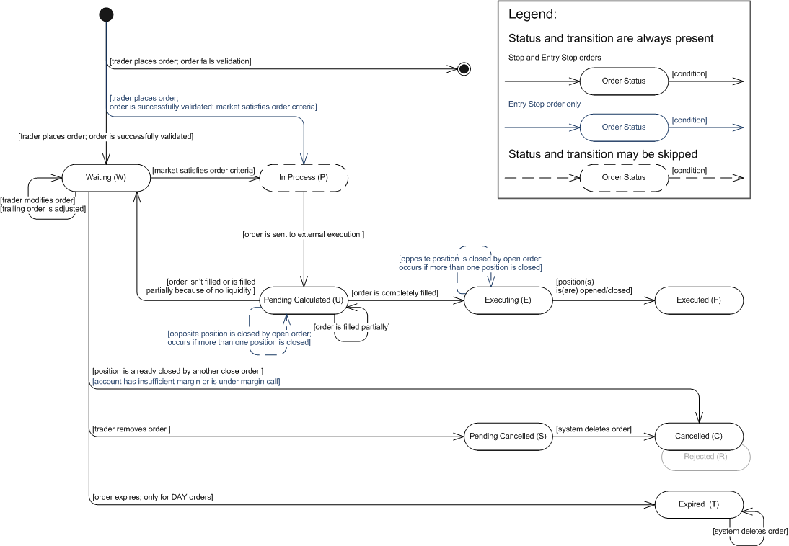

The article describes the stop and entry stop orders.
A Stop Order is an order to buy or sell an instrument once the market price reaches a specified price. When the specified price is reached, the stop order is executed at the stop price or at worse price. The stop order can be used to enter or exit the market.
The order is used to limit the trader’s losses on a trade. The stop order to buy an instrument limits losses on sell trades. In this case the order is placed at a price that is above the current market price. The stop order to sell limits losses on buy trades and the order is placed below the current market price.
The order can be used on regular accounts which are not subject to FIFO. FIFO-based accounts do not allow placing closing stop orders, so whether the trader is willing to exit the market by stop order he/she must use an Entry Stop Order.
A stop order can be automatically adjusted while the market moves in trader’s favor. Such stop order is called a Trailing Stop Order. So the trailing stop order does not only limit trade losses but locks in profit if the market price moves in trader's favor.
The order is used for entering the market in case the trader believes that the market price will continue to move in the same direction after hitting the stop price of the order. This is usually done if the stop price represents a level of support or resistance. If prices rally through resistance and hit the stop price, then the trader will buy the instrument expecting that prices will continue to rally. Similarly, if prices fall through support and hit the stop price, then the trader will sell the instrument expecting that prices will continue to decline. See execution Scenario 1.
As was mentioned above, the order is used for entering the market, however, if hedging on an account is disabled, placing an entry stop order in the direction opposite to an existing position will result in closing such position. So the entry stop order is used as closing stop order on FIFO accounts and it is a secondary order of the ELS (Entry-with-Limit-and-Stop) Contingent Order.
An entry stop order can be automatically adjusted while the market moves in trader’s favor. Such stop order is called a Trailing Entry Stop Order. This order may be used in the same manner as closing trailing stop order on FIFO accounts. Another way is to use the trailing entry stop order to open a position. The trailing entry stop orders may be used in range bound market strategies. A range bound market is characterized by levels of higher buying pressure, known as a support, and higher selling pressure, known as a resistance. These levels create a channel, where market movement is generally concentrated within these levels. The trader gets profit buying at the lower level of support and selling at the resistance. The trailing entry stop order helps to "catch" market reverse point on support or resistance level. The trailing entry stop order to buy is placed at the top of the channel (resistance level), the market price declines and the order follows market price. The market price reverses at the bottom of the channel and hits the order price. The order to sell is placed at the bottom, the market price rallies and the order follows market price. The market price reverses at the top of the range and hits the order price.
An entry stop order can be specified as a Net Amount Order. This is an instruction to close all positions in the given instrument. With net amount orders, the system does not check whether an account has sufficient funds to accommodate an order. See execution Scenario 4.
The trader has the following time-in-force options that provide additional instructions on how long an order should remain active:
Time-in-Force Option |
Description |
Good Till Cancelled (GTC) |
An order which remains active until the trader decides to cancel it or until the order is executed. In the event of limited liquidity, a GTC order may be executed in portions. Such execution results in a number of positions opened/closed at different prices. |
Day (DAY) |
An order that automatically expires if not executed on the day the order is placed. During the trading day the order behaves exactly like a GTC order. |
A stop order guarantees execution but doesn’t guarantee the price. To fill a stop order, the system searches for the best price. If the best price is equal or better than the original price of the order, the order will be executed at the best price. The best price may also be worse than the original price of the order. In this case, the order will be executed at a worse price i.e. order is filled with slippage.
A stop order can be executed partially. It means that one order may result in a number of positions opened/closed at different prices. When the market satisfied the order criteria it is filled in portions to the maximum extent possible (until the liquidity pool is dried up), the remainder of the order is set to wait until the market once again hits the price specified in the order. In case of partial closing, the system closes a position in the filled amount and opens a new position in the remaining amount. See Execution Scenarios.
The stop/entry stop orders state machine is based on the FXCM order statuses. The state machine, description of order statuses, and their transitions are provided below. Note that the order is created by the system only after successful order validation. If the order does not pass validation, the system creates a rejection message and does not store the order in the database. However, the information about the order (such as, for example, the order ID and the reason for its rejection) is stored in the database. So, the initial transition on the diagram indicates that the order is successfully validated.
Stop/Entry Stop Orders: State Machine

Stop/Entry Stop Orders: FXCM Order Statuses Description
Order Status |
Order Status Description |
Transition |
||||||||||
Waiting (W) |
The status has one of the following meanings:
|
|
||||||||||
In Process (P) |
The status has one of the following meanings:
|
|
||||||||||
Pending Calculated (U) |
The status has one of the following meanings:
|
|
||||||||||
Executing (E) |
The order was completely filled. |
|
||||||||||
Executed (F) |
A position was opened/closed. Note that the order may result in a number of open/closed positions. |
|||||||||||
Pending Cancelled (S) |
The status is applicable only to GTC orders: |
|
||||||||||
Cancelled (C) |
The status has one of the following meanings:
|
|||||||||||
Expired (T) |
The status is applicable only to DAY orders: |
|